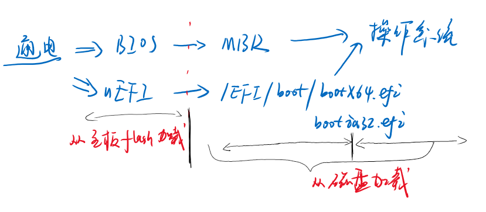

Linux
boot
加电–> 主板初始化程序 –> bootloader(mode:real->protect) —> 操作系统

操作系统 初始化
kernel: vmlinuz-… ramfs: initramfs…

服务配置
/etc/*
用户shell配置
~/.bashrc ~/.profile /etc/bashrc /etc/profile
bash
#变量
a=b
echo $a
#函数
function f(){
#do something
echo "value"
return int
}
x=(a b c) #array
${x[0]} == a ; ${x[10]}=="" ; ${x[*]} == a b c ; ${x[@]} == "a" "b" "c"
#Math, value calculate, integer
$[a+b] ;$((a+b)); $[a*3];... # float ,pass
#if
if condition
then
#todo
elif ....
then
#todo
fi
#for
for i in /path/
do
#for i in "间隔=空格|换行some string"
#todo
done
#while
while condition
do
#todo
done
#异步 结尾&, 注意 &后边没有分号!!!
comand &
命令
#命令
#路径
ls
cd
#字符串,字符文件
cat file
grep patten file
#管道
echo abc | grep a
#重定向
echo abc > file ; echo abc >> file
echo abc 2> file #stderr
echo abc &> file #stdout & stderr
#子进程方式
./file.sh
#当前进程执行
. ./file.sh
#暴露 变量x给父进程
export x
网络
#ip
ip a show
ifconfig
iptables (内核中 netfilter)
ssh
#netstat -nltp
含义: -n 数值; -l listen; -t tcp -u udp; -p pid
netplan
network:
# yaml version 2 = 1.2 ? 1.1 (1.0 1.1 1.2)
version: 2
ethernets:
ens33:
dhcp4: no
addresses: [192.168.40.130/24]
gateway4: 192.168.40.1
nameservers:
addresses: [192.168.40.1]
ssh
# ssh
ssh user@host -p port -i id_key
# sshd
ssh-keygen -t rsa -b 4096 # default -b 2048
~/.ssh/authorized_keys # pub
/etc/ssh/sshd_config
```bash
PermitRootLogin no
PasswordAuthentiction no
```
系统状态
uname -a
lsb_release -a
ps
磁盘/文件系统
mount
fdisk -l
mkfs
#权限
#0777 的第一个数值 作用是用来设置, 以谁来启动. #比较少用到默认写0;
chmod +x file ; chmod 0777 file ;-R 递归目录
#user group others
#chown
...
目录用途
/home /etc 配置文件 /lib 系统库目录 /bin; /sbin 程序; 系统程序(root权限) /usr ; 用户目录 /dev 设备 ; dev/sda /dev/shm ….